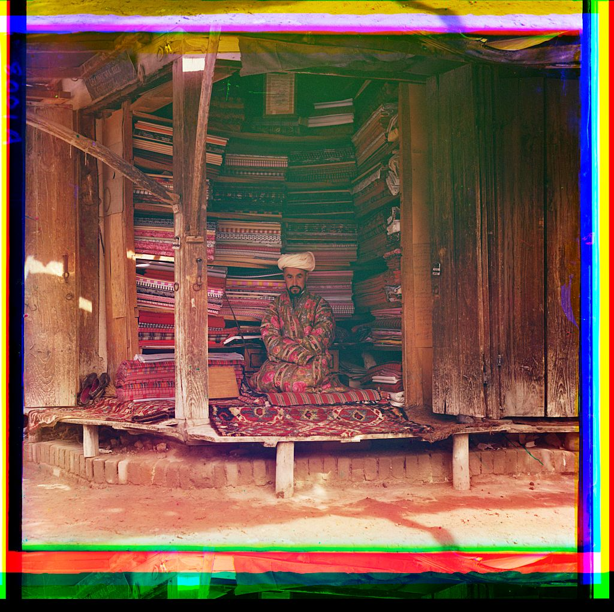

Бухарские купцы в Российской империи: сибирские «бухарцы» и караванная торговля (XVI–XX века)
Одна из малоизвестных страниц узбекской и центральноазиатской миграции — общины бухарских купцов и переселенцев на территории Российской империи. Называемая в русских документах «бухарцами», эта группа на деле охватывала торговцев со всего Туркестана, а не только из города Бухары. С XVI–XVII веков они расселялись в Западной Сибири, двигали караванную торговлю и позже растворились среди сибирских татар. Это руководство опирается исключительно на научные источники и обращается с датами так же осторожно, как историки.

Одна из слабо освещённых страниц в истории миграции узбекского и центральноазиатских народов — общины бухарских купцов и переселенцев, складывавшиеся на протяжении веков на территории Российской империи, особенно в Западной Сибири. Это руководство объясняет тему исключительно на основе научных источников, приводя конкретные даты лишь настолько осторожно, насколько их указывают историки. Главный научный труд — «The Merchants of Siberia» Эрики Монахан (Cornell University Press, 2016).
«Бухарцы» — широкое обозначение
В русских и сибирских документах термин «бухарец» (русское «бухаретин», мн. ч. «бухарцы») на деле использовался широко: он охватывал не только выходцев из города Бухары, но и центральноазиатских мусульманских купцов в целом — из Хивы, Коканда, Самарканда, Ташкента и других городов и селений Туркестана. Как отмечает историк Эрика Монахан, это название применялось ко всей категории из-за престижа Бухары в торговле и учёности.
Расселение в Сибири
Центральноазиатские купцы начали расселяться в Западной Сибири главным образом в конце XVI — XVII веке, после завоевания Россией Сибирского ханства (государства Кучума) в 1580-х годах. Согласно источникам, первое упоминание о них на российских сибирских землях относится к 1595 году. Они образовали общины преимущественно в Тобольске, Тюмени, Таре и Томске и стали главной движущей силой караванной торговли между Центральной Азией и Сибирью — привозя ткани, а позднее чай и другие товары, и увозя на юг русскую и сибирскую продукцию.

Привилегии и правовой статус
Под российской властью бухарцы пользовались рядом привилегий: освобождением от налогов, от военной службы и от некоторых повинностей. По данным историков, одной из самых ранних привилегий была грамота, данная Иваном IV Строгановым в 1574 году, разрешавшая бухарцам беспошлинную торговлю. В середине XVII века они получили привилегии от царя и начали покупать землю у русских и татар; привилегии были вновь подтверждены в конце века. Со временем, около 1700 года, при Петре I, их постепенно вовлекли в налоговую систему, и они начали становиться российскими подданными. В Сибири «бухарцы» были также признаны отдельным социально-правовым сословием.
Торговые пути: Оренбург и Нижний Новгород
Деятельность центральноазиатских купцов не ограничивалась Сибирью. Крепость Оренбург была основана в 1735 году именно как ворота торговли с Центральной Азией (Хивой, Бухарой) и казахской степью; основной обмен вёлся в «Меновом дворе» за рекой Урал. Бухарские купцы участвовали и в знаменитой Макарьевской — позднее Нижегородской — ярмарке на Волге, а в XVIII веке им в порядке исключения разрешали торговать в Санкт-Петербурге, Москве и пограничных городах. Астрахань же была крупным торговым узлом, связывавшим Бухару, Хиву и Иран через Каспий, где центральноазиатские купцы также были активны.
Ассимиляция и цифры
На протяжении веков бухарцы жили рядом с сибирскими татарами и через смешанные браки растворились в их языке и укладе. Название «бухарец» сохранялось как административная и переписная категория до начала XX века — примерно до 1930-х годов. Во Всесоюзной переписи 1926 года бывшее бухарское население вокруг Тобольска и Тюмени было учтено среди татар. Согласно той переписи 1926 года, численность сибирских бухарцев приводится около 23 700 человек.
Почему это важно
История сибирских бухарцев — один из древнейших пластов узбекской и центральноазиатской диаспоры. Хотя как отдельный народ они больше не существуют, часть западносибирских татар возводит свои корни к тем бухарским купцам и переселенцам. Это яркий пример того, как далеко предки Узбекистана добирались благодаря торговле и как они создавали общины в дальних краях.
Важное замечание
Это основанная на фактах историческая информация. Некоторые ранние даты (например 1574, 1595 годы или обложение налогом при Петре I) несколько различаются между источниками и приведены выше осторожно, в том виде, как их указывают историки. Для более глубокого знания рекомендуется обращаться к специализированной научной литературе.

Источники
- Erika Monahan, «The Merchants of Siberia: Trade in Early Modern Eurasia» (Cornell University Press, 2016) — «buxorolik» atamasining keng maʼnosi, karvon savdosi, imtiyozlar
- Z. A. Tychinskikh, «Where did the Tobolsk and Tyumen Bukharans 'disappear' to» — Vestnik Arkheologii, Antropologii i Etnografii, 2(57), 2022 (assimilyatsiya; 1926 roʻyxatida tatar sifatida qayd etilishi)
- Wikipedia — «Siberian Bukharans» (umumiy tavsif, Toboʻlsk/Tyumen/Tara, 1926-yil 23 700 raqami)
- Wikipedia — «Orenburg» va «Nizhny Novgorod Fair» (1735 savdo darvozasi, Menovoy dvor, yarmarkadagi buxorolik savdogarlar)